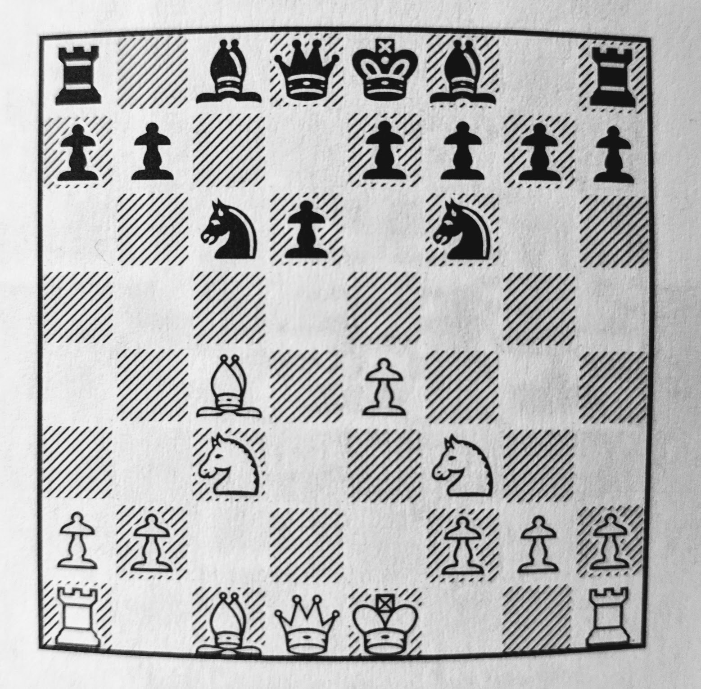

Always setup the board with White on the Right.
Queen on her own color.
You need to know the rules for castling, and when you may and may not castle.
Remember that pawns may capture en-passant. This happens frequently, so learn that rule.
When you start a game, the most important thing is to Develop your Pieces wihout delay. Fully developed means having your knights and bishops on active squares, and castled (or ready to castle).
Bishops and knights are the minor pieces. Bring them out first. Don't move a piece twice in the opening.
When your bishops and knights are on active squares, plan which side you will castle, and when.
Knights typically move to the two squares that control the center.
The four central squares are called The Center, and control of the center is key.
If you can put two pawns on the cental squares, do so. Then defend them against attack. If you can, advance the center.
If your opponent has a pawn center, attack it. Don't let it advance.
If you follow all this advice, and always develop fully and castle before attacking, your play will be solid. But it might also be boring. You can choose to play risky chess too, but its important to know the difference.